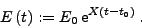
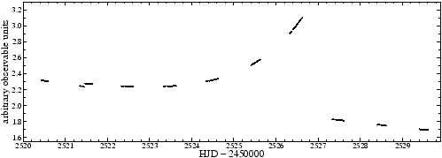

The keyword sim:exp is given with five floating-point parameters. They specify
|  | (23) |

Example. The sample project sim-exp contains the simulation and analysis of two exponential trends, one over the entire time base, one on a restricted time interval, corresponding to the lines
sim:exp 2521.4532 2526.8832 1.3256 2526.7384 0.65834
sim:exp 0 0 2.2841 2520.8562 -0.03425
in the file sim-exp.ini. The sampling of the V photometry of IC4996#89 is used, and the simulator replaces the original observable values, according to the line
sim:replace
The screen output contains the expression exponential trend to indicate that such a trend is generated. In this example, the entry is found twice. The resulting light curve is displayed in Fig.30.
SIGSPEC detects 54 significant signal components, which are not discussed here.


Next: Serially correlated noise
Up: The Built-in Simulator
Previous: Polynomial trend
Contents
Piet Reegen
2009-09-23